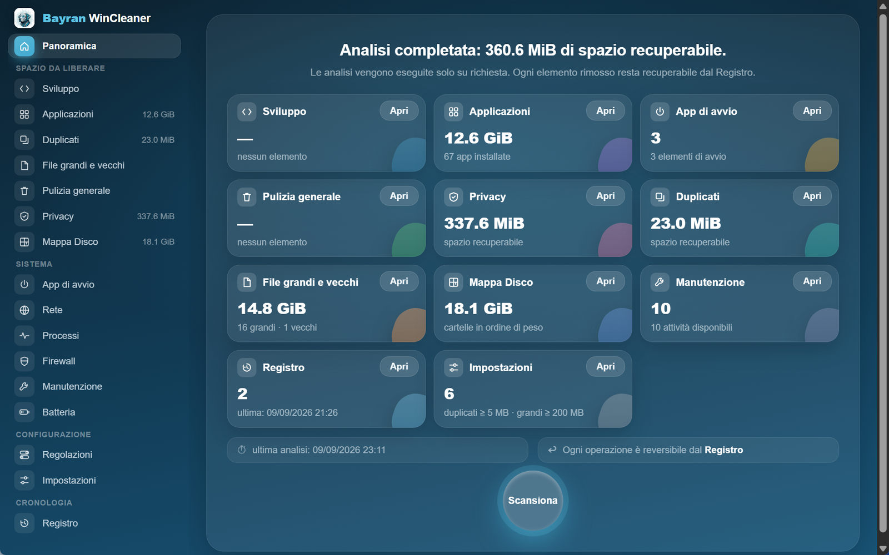
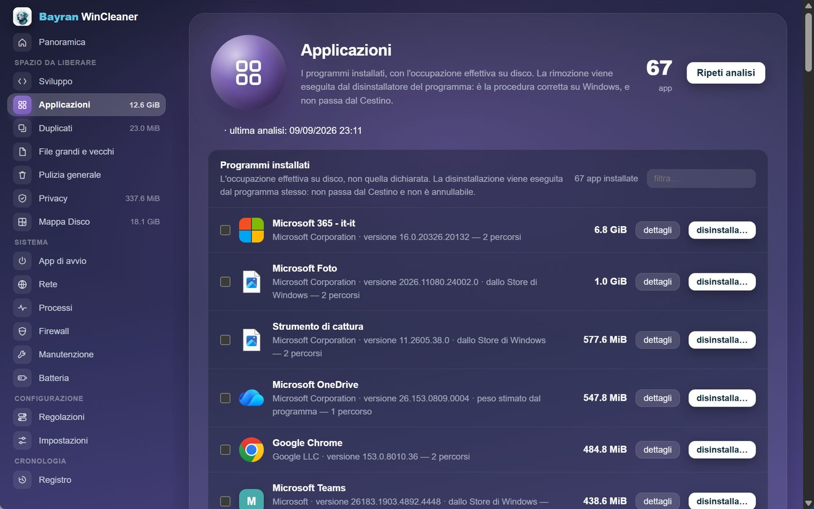
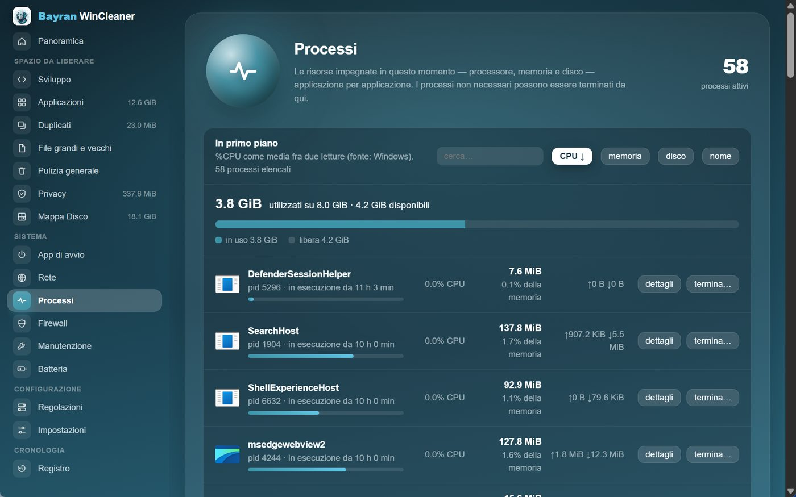
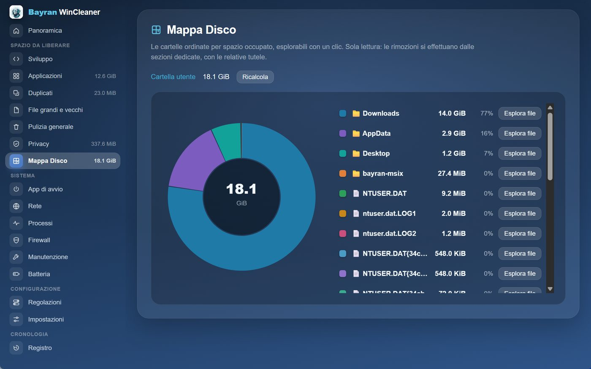
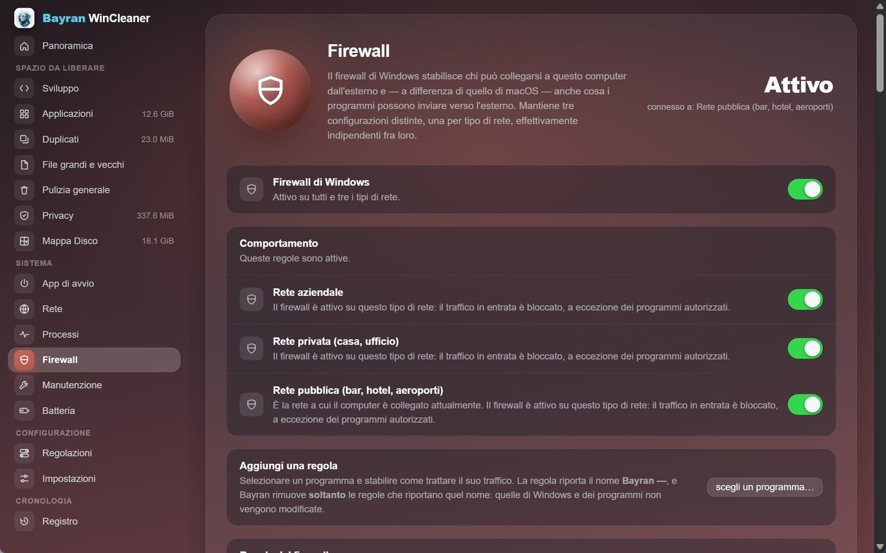

Il PC torna in ordine.
Senza abbonamenti, senza allarmi, senza sorprese.

Pulizia, manutenzione, monitoraggio, rete e firewall. Un programma solo.
Tutti i programmi installati, in ordine di peso reale sul disco. Non quello dichiarato: quello che occupano davvero. La disinstallazione parte da qui.

Processore, memoria, disco e connessioni aperte, in tempo reale e applicazione per applicazione. Quello che rallenta il PC ha un nome.

Dove è finito lo spazio, cartella per cartella. Un grafico che si apre a ogni livello, fino all'ultimo file.

Rete di casa, rete aziendale, rete pubblica: tre configurazioni, una schermata sola. Traffico in entrata e in uscita, regola per regola, programma per programma.

Per tenere in ordine un PC di solito ne servono quattro o cinque. Questo li sostituisce tutti.
Un programma solo. Gratis.
Ogni sezione con la sua schermata. Nessuna ricostruzione, nessun numero di fantasia.
Un programma di pulizia lavora su file che contano. Quattro regole, sempre le stesse.
Gratuito, senza pubblicità e senza account. Si aggiorna da solo.
Al primo avvio Windows mostra «Windows ha protetto il PC»: si prosegue con Ulteriori informazioni e poi Esegui comunque.